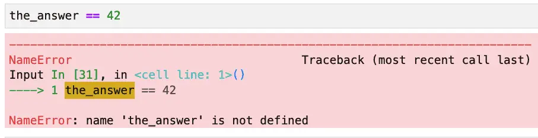

Python Operators: The Building Blocks of Successful Code
Operators in Python: An Overview
Operators are an essential part of any programming language, and it is necessary to understand their function to write code that is efficient and easy to read. Do you know what the different operators in Python do? In this blog post, we will explore the various operators and provide expert tips on using them. We will answer some of the most commonly asked questions, such as “what does % do in Python?” and “what are logical operators?” Let’s get started!
Operators in Python are usually special symbols, but sometimes short keywords like in, or, and, is, not. The symbols perform various operations such as adding two numbers (arithmetic operators), comparing two values (logical operators), or finding out if a value is part of another (membership).
There are many different operators in Python, including arithmetic operators, comparison operators, assignment operators, and more. Each type of operator has a different function, and knowing how to use them is essential for programming in Python. In general, operators perform operations on variables and values. You can write more sophisticated code and carry out more complex computations by understanding how to use operators.
Arithmetic Operators
The arithmetic operators in Python are all binary operators. They take two “operands” (things on which they operate). The operands can be variables or number literals like 1, 2.3, etc. Many Python arithmetic operators are either the same as the symbols used in mathematics and calculators or may be familiar to anyone who has put formulas in a spreadsheet.
We can use a short program to demonstrate these operators.
Python Arithmetic Operators Example
The following operator example demonstrates all of the Python arithmetic operators except for modulo (%), which we cover in the next section.
# Add two numbers: +
print(10 + 2)
# Subtract two numbers: -
print(10 - 2)
# Multiply two nubmbers. We use *, not x!
print(10 * 2)
# Divide two numbers: /. Will convert result to floating-point
print(10 / 2)
# "Floor division" throws out any remainder, rounding down to floor: //
# This is rarely used.
print(7 / 2)
print(7 // 2)
# Exponention (raise a number to a power).
# Here it's "10 to the second power" or "ten squared"
print(10 ** 2)
Output:
12
8
20
5.0
3.5
3
100
Note that according to Python coding standards, we should put a space before and after an operator, as shown in the examples above. So we write “x + y”, not “x+y”.
What Does % Do in Python?
There is one arithmetic operator that’s special to programming. For this reason, it’s not as widely known as other operators. We will discuss this one next.
The % operator in Python is used to perform modulo division. Modulo division is the operation of finding the remainder after division. For example, if we divide seven by 3, the remainder would be 1. So, in Python, 7 % 3 would evaluate to 1.
The % operator can be used on integers and floating-point numbers alike. However, it will always return an integer result (rounded down to the nearest whole number).
So, what can you use the % operator for in Python? Well, one common use case is to check whether a number is divisible by another number. For instance, if we wanted to check whether a number was even or odd, we could use the % operator. If a number % 2 evaluates to 0, then it’s even. If it evaluates to 1, then it’s odd.
The modulo operator is part of the solution to FizzBuzz, a typical beginner interview question. The idea is that you write a program or function to print a sequence of N integers, and for each number, the program prints “Fizz” if the number can be divided by 3, “Buzz” if the number can be divided by 5. If the number is divisible by both three and 5, your program must print “FizzBuzz.”
Formatting strings is another use case you’ll sometimes see for the % operator. For example, if we want to print out a dollar amount and only include two decimal places, we could use %.2f as our format specifier. This would tell Python to print out a floating-point number with two decimal places. The use of % as a “format operator” is not widely used in modern Python, where it’s now referred to as “old-style string formatting” – see Python Format Strings: Beginner to Expert to learn more about current best practices.
Assignment Operators
Assignment operators are operators that assign values to a variable. The most common assignment operator is a single equals sign, “=”. The assignment operator assigns the value of an expression on the right, which can be a string, a number, or the return value of a function call, to a variable or variable expression on the left.
Simple Assignment
Here are some examples showing simple assignment:
x = 10
y = 2 + 2
message = "Hello!"
date_string = "12-31-1999"
print(x)
print(y)
print(message)
print(date_string)
Output:
10
4
Hello!
12-31-1999
Operator Precedence
In the second example, we were able to use an arithmetic operator to add two numbers, which we then assigned to a variable with the assignment operator. This expression works because the arithmetic operators are evaluated before the assignment operator. We say that the math operators have a “higher precedence” than the assignment operator.
In this article, we won’t cover operator precedence in great detail. In the beginning, it’s important to know there is such a thing and that usually, the rules are designed so that they follow what you’d expect from algebra or otherwise make sense for the most common uses. Once you’ve had some experience using operators in your programs, you may find it helpful to spend some time studying the Python precedence rules.
Our simple operator precedence example added two numbers and assigned the result to a variable. This general task – doing some math and assigning the result to a variable – is so common in programming that Python and many other programming languages have a whole group of special “shortcuts” you can use to do both operations simultaneously. This is the subject of our next section.
What Are Compound Assignment Operators in Python
We’ve learned several different arithmetic operators, and we’ve used the simple assignment operator (a single equals sign) to assign a value to a variable. What’s fantastic about knowing this is that you can almost double your knowledge of Python operators simply by learning a new and simple idea: compound assignment operators.
You see, programmers are lazy. Peanut butter and jelly sandwiches were probably invented by a lazy programmer who didn’t want to make herself a peanut butter sandwich followed by a jelly sandwich.
Python compound assignment operators combine a math operator with a simple assignment operator to create a new operator that performs a math operation on both operands and then assigns the result to the operand on the left. There are compound assignment versions of all the arithmetic operators: +=, *=, /=, %=, etc.
Assignment vs. Comparison: = vs. == in Python
Like many programming languages, Python makes a distinction between the assignment operator (a single equals sign) and the comparison operator that can be read as “equals” or “is equal to” (two equals signs with no space between them). Confusing the two can be a common source of mistakes for new programmers.
Confusing the two is a common beginner mistake. If you confuse the two, you’ll see a different error message depending on the context. If you use the equality comparison operator where you meant to do an assignment, you’ll typically see a NameError if the variable is not already assigned:

On the other hand, using an assignment operator where you meant to use an equality check gives a SyntaxError, with a helpful error message:

The “:=” symbol in the SyntaxError above is a special recently introduced assignment operator which combines an assignment operator and comparison operator. We discuss it later in the section “What is the Python Walrus Operator?”
Incidentally, I mention the type of error in both cases, but remembering those names is much less important than knowing that they might point to this common programmer mistake.
Python Comparison Operators
In the last section, we already met our first comparison operator, which reads as “equals” or “is equal to”: “==.” Most of the other comparison operators in Python are also quite simple to understand since they look similar to expressions from basic math (really basic, I promise). All of these make a comparison that returns a boolean (true or false) result. Here’s a summary of the operators:
== (“is equal to”)
!=<(“is less than”)<= (“is less than or equal to”)
>(“is greater than”)>= (“is greater than or equal to”)
Python Identity Operators: Is and Is Not
“To be or not to be” – oh, sorry, Shakespeare identity operator flashback! The identity operator in Python, “is”checks that two variables are references to the same object in memory (which is different from whether they are objects that are different but equal. To check that two objects are not the same, use “is not”.
Here’s a short example:
# Shows the difference between equality and identity.
a_list = [1,2,3]
b_list = [1,2,3]
another_list = a_list
print(a_list is another_list)
print(a_list is b_list)
print(a_list == b_list)
Output:
True
False
True
Without a doubt, the single most common use of the identity operator is comparing a variable against or function return value with None.
if critical_object is None:
# Raise an exception
if critical_object is not None:
# Hooray, run the rest of the code that uses it here.
Logical Operators: Combining Boolean Expressions
We’ve seen how to use the comparison operators to evaluate two values and return a boolean result. Often, however, you want
The Python logical operators are “and”, “or” and “not”. These are the boolean operators that return a Boolean value based on the evaluation of the related expressions.
The ‘and’ operator returns True if both the operands are true. Otherwise, it returns False. The ‘or’ operator returns True if either operand is True. The ‘not’ operator negates the Boolean value of the operand. It reverses it, so if the operand is true, then not will make it false. If the operand is False, then not will make it True.
These operators are used to combine multiple conditions in an expression.
Python Operators that Short Circuit
The operators “and” and “or” are known as short-circuit operators because they do not evaluate all the conditions if they can already determine the outcome based on the first condition. For example, if we have an ‘or’ condition and one of the operands is TrueThere is no need to evaluate the other operand because we know that the expression will be True regardless.
Generally, the short circuit behavior is what you want because they optimize our program and save some processing power by short-circuiting the evaluation process. There are, however, some things to be aware of when using short-circuited operations.
If you’re new to Python and need some practice working with boolean expressions, look at our Boolean Expression: Beginner to Expert, a full tutorial with practice questions and exercises. You may also find the following section helpful.
Logical Operators: Summary Truth Table
In addition to hands-on practice, some programming students find it helpful to briefly review a truth table to understand the results of the logical operators. Here we can see that the “and” operator short circuits if the first expression is False because the result of the whole expression is known to be False at that point.
In contrast, the “or” operator short circuits when the first expression is True, for the result must then be True.
| Operand 1 | Operator | Operand 2 | Result | Discussion |
| True | and | True | True | |
| False | and | True | False | Short circuits |
| True | and | False | False | |
| False | and | False | False | Short circuits |
| True | or | True | True | Short circuits |
| False | or | True | True | |
| True | or | True | True | Short circuits |
| False | or | True | True | |
| N/A | not | True | False | Simple negation |
| N/A | not | False | True | Simple negation |
Watch Out for These Common Short Circuit Traps
One popular idiom often used with “and” is to check for a valid object or key before using it. This technique is prevalent in code written by developers familiar with other languages. Here are two examples:
# This code has problems! See the text below it.
if "some_key" in some_dictionary and some_dictionary["some_key"] == "Some Value":
# Do another thing
if my_object is not None and my_object.do_something():
# Do a thing
As popular as these idioms are, you might consider rewriting both examples. In the case of checking for a dictionary key, it’s much more straightforward simply to write this:
if some_dictionary.get("some_key") == "Some Value":
# Do another thing
The get method returns None by default, and None can safely be compared to “Some Value” to return False.
In the case of checking for some_object is None before using it, if the object passed to a function must be valid, it’s better to let the exception get raised since it’s a programmer error that must be fixed.
On the other hand, if some function, such as a database query, can fail and return None, it’s better to handle that case as an error or exception at the point of that failure.
Another potential issue with short circuit operations is having code that must be run in any case on the right-hand side. Remember that depending on the result on the left, that code may not run at all, which may not be what you want.
Membership Operators
Membership operators exist in other languages, such as Julia, so they’re not unique to Python. However, unlike other Python operators we’ve discussed, membership operators are not common in other languages.
Most authors say that there are two membership operators: in and not in. However, since “not” is a logical operator that negates what comes after it, one could argue that there’s only one.
What Does the In Operator Do In Python?
The in operator returns a boolean value, testing whether the left operand is somehow contained in or a subset of the right operand. Many sequences and containers can appear on the right: lists, sets, strings, arrays, tuples, etc. For example, "Py" in "Python" returns True.
The exact meaning of the membership operator depends on the type involved. Here are some examples that show the different – but consistent – uses of the in operator. The output for each line is shown in the comments:
early_primes_set = {2, 3, 5, 7, 11, 13, 17, 19}
early_primes_list = list(early_primes_set)
# For lists, sets, arrays, etc., in tests simple membership.
print(4 in early_primes_set) # False
print(5 in early_primes_list) # True
# For strings in checks if a substring exists.
# The check is case sensitive
greeting = "Hello, Python lovers!"
print("love" in greeting) # True
print("hello" in greeting) # False
print("hello" in greeting.lower()) # True
# For dictionaries, "in" checks if key is in dictionary (not value).
opinion = {"readers": "awesome"}
print("readers" in opinion) # True
print("awesome" in opinion) # False
print("writers" in opinion) # False
Bitwise Operators
Bitwise operators are special operators in Python that allow you to perform operations on integer data at the bit level. These operators are often helpful when interfacing with C or embedded systems. Space may be at such a premium in these systems that data may be packed into integers using bitwise manipulation, or specific bits may control certain hardware operations.
The bitwise operators are: & (AND), | (OR), ^ (XOR), ~ (NOT), << (left shift), >> (right shift). These operators can be used on integers of any size, including negative numbers. Let’s take a closer look at each of these operators.
To work with binary numbers explicitly, you prepend 0b to a number literal containing only ones and zeros as digits.
Bitwise AND and OR
The & operator performs a bitwise AND operation on two integers. The result is an integer where each bit is set to 1 if both input bits are 1, and 0 otherwise. For example, if we have the integers 3 and 5, their binary representations are 0011 and 0101, respectively. When we apply the & operator to these two numbers, we get the result 0001, binary for 1.
The | operator performs a bitwise OR operation on two integers. The result is an integer where each bit is set to 1 if either of the input bits is 1, and 0 otherwise. For example, if we have the integers 3 and 5, their binary representations are 0011 and 0101, respectively. If we bitwise or them, we get 0111, which is binary for 7.
Given what we’ve written above so far, here’s how it would look in code:
# Do 3 bitwise AND 5, then 3 bitwise OR 5 in binary:
print(0b0011 & 0b0101)
print(0b0011 | 0b0101)
# Check our math:
print(3 & 5)
print(3 | 5)
print(0b0011 == 3)
print(0b0101 == 5)
Output:
1
7
1
7
True
True
Unlike the logical operators, the bitwise operators feature an exclusive or operator, or “XOR” operator: “^”. This operator sets a bit if the corresponding bit in exactly one (not both) of its operands is set.
print(0b0101 ^ 0b1101 == 0b1000) # True
print(0b0101 ^ 0b1101 == 8) # True
In the example above, given 0b0101, which is decimal 5 (The four-bit and the one-bit are set), and 0b1101, which is decimal 13 (1+4+8), exclusive or will clear all the bits that are set in both values, leaving us with 0b1000, which is decimal 8.
Other Bitwise Operators
The bitwise complement cooperator is a unary operator, which flips all the bits in its operand. If they’re ones, they become zeros; those that are zeros become ones.
Finally, the bitwise left-shift and right-shift operators deserve a short mention. These are used to move bits over by a certain amount. The effect is to multiply or divide by 2. Here are two simple examples:
# Left shift the two bit 3 places to the left, to get sixteen
2 << 3 == 16 # True
# Right shift 16 one place to the left, to get eight
16 >> 1 == 8 # True
Compound Bitwise Assignment Operators
As with arithmetic operators, the bitwise operators combine with the assignment operator to create compound assignment operators. The compound bitwise operators are &=, |=, ^=, >>=, and <<=.
What Is the Python Walrus Operator?
The Walrus operator, “:=”, was introduced in Python 3.8. Called a walrus operator because it looks like the eyes and tusks of a walrus, it combines assignment and a check for equality in a single operator. This can produce more concise code in certain situations.
Some of the places where the Walrus operator is appropriate are the loop condition of a while loop where data is being read and checked or inside a list comprehension.
The “What’s New” release note document for Python 3.8 discusses these and several other use cases where the walrus operator makes sense.
You May Also Enjoy
This article is part of the Learn Python series.